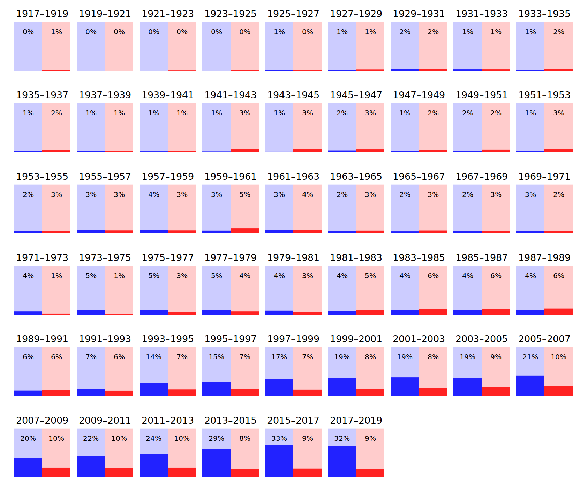
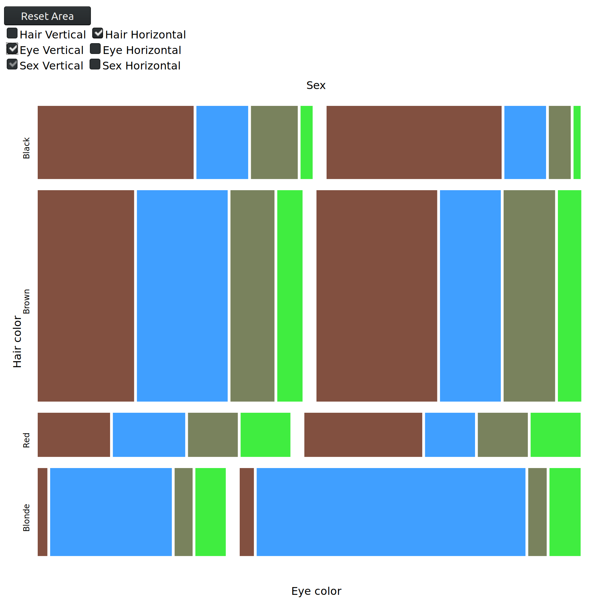

The 2017-2018 Arts Survey Data has data about arts teachers, budgets, partnerships with cultural organizations and parental involvement in NYC public schools.
In an effort to gain greater context for this data, we can examine it in conjuction with publicly available ELA and Math state test results and demographic data.
My goals were to understand the state of arts programs in NYC schools, what variables affect the resources of arts programs, and whether arts programs have an effect on the academic performance of students.
Gender Makeup for American Congressional Representatives

For a class on exploratory data analysis and visualization, I created this web app to demonstrate mosaic plots.
